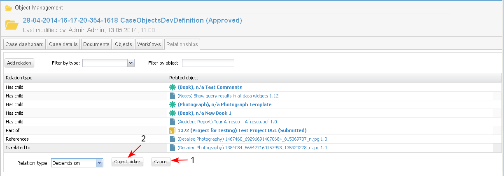

The user is able to create references between objects. A reference could be created from each primary system object to another object.
Add Relationship
A new reference could be created from each primary object landing page, section Relationships/ Add relation.
- The user selects the button "Add Relation" (1-2-3).

- A new section for selecting the "Relation type" of the new relationship appears. The user selects the type from a drop down list (1-2-3). The object type is not a restriction.
The user could create any types of relationships between two objects except parent-child relationship.

- Additional buttons appear in the form - Cancel (1) and Object picker (2). Selecting the cancel button cancels the action "Add Relation". The user selects "Object picker" (2).

- The system opens the Object picker screen (1) where the user could search from different locations (2) and select objects by different criteria (3). He could:
- browse the projects and libraries he/she has access to, find and select the object
- perform free text "keyword" search on the content he/she has access to (using "Contains text" criteria)
- open "My Favorites" list with objects, and select an object (Not Ready)
- upload object from the local PC (using the "Upload" action)
The user clicks "Search" (4).

- The user selects object/s from the list of results from the search and clicks the button "OK" (1-2-3).

- The new relationship is created (1) and it is both visible in the Related Content section of the current object, and in the Related Content section of the linked object.
- The relationship is visible in the current object (1). The created relationship may be deleted by selecting the corresponding button "X" (2), available for all user created relations.

- The relationship is visible in the linked object (1-2-3).

Relationships in Workflows
- Each object (document, cultural object, etc) that is related to a workflow task is automatically related with the next tasks in the workflow.
- The user performing task from a workflow, is able to delete relationships to objects inherited from previous tasks.
Rules
- Relationship with title: “Part of/ Has child” is created automatically between:
- Project (parent) – and the cases (child), tasks (child), workflows (child) and documents (child) created directly on project level.
- Case (parent) – and the tasks (child), workflows (child) and documents (child) created on case level
- Object (parent) (could be iDoc or business domain object, represented as iDoc) – and all the documents (child) attached (uploaded) to the object (TBD: Attachments widget to be specified)
- An object could have only one relationship of type “has parent”.
- Relationship with title "refers to/ Is referenced in" is created automatically between:
- A case and business domain object, when the object is attached/ created in a case. One case could refer to many business domain objects and one object could be referenced in many cases.
- A task and the documents and business domain objects, associated in the task. One task could refer to many documents, business domain objects and one object/ document could be referenced in many tasks.
- An Object (could be business domain object or iDoc) and another first class system object (project, case, task, document, business domain object) displayed in Object Data widget or in Data Table in the iDoc.
- An Object (could be business domain object or iDoc) or Comment and another first class system object (project, case, task, document, business domain object), a link to which is inserted in the iDoc or the Comment.
- More than one relationships of type “refers to/ Is referenced in” could exist between 2 objects.
If the relationship already exists between 2 objects and the first object refers to the second object again, then a new relationship of that type is created again.
This requirement comes from the fact that I should be able to track all the relationships between 2 objects, and if one of the relationships is deleted, the rest will still exist.
- Relationship “refers to/ Is referenced in” between 2 objects is deleted automatically when:
- The user removes an object from case or task, removes an object from object data widget or data table, or removes a link to an object from idoc.
- An object is deleted in the system – when an object is deleted all relationships from/to this object are deleted also.
- "Relationship to fixed version" - when selected, the relationship is established to the document version selected by the user. If the object undergoes changes and new versions are created, the subsequent changes are not reflected in the place where the document has references. (e.g., project, case, report, etc.) (see "Review Historic Version"). (Not Ready)
- "Relationship to current version" - when selected, the relationship is established to the most recent version of the document and will, in the future, open whatever the current version is even if newer versions have replaced the version to which the original reference was created.
- When the fixed version is opened and it is not the latest, then a message is displayed to the user “This is a historical version, to view the current version click here”
- By default when the user creates new relationship is selected "Current version"